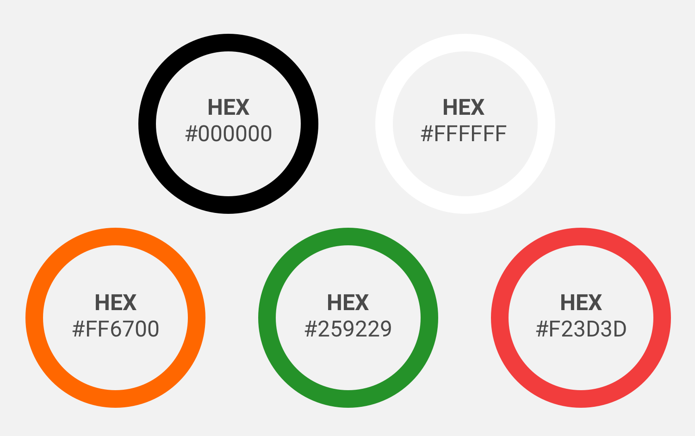

Some Text about the goals behind the color pallete choices

General info card on Series page
Color in Concerto is purposefully minimialistic this was done because the focus of Concerto is on the content being added by users. Concerto uses opacity and an accent color to create a visual hierachy
Some Text about the goals behind the color pallete choices
General info card on Series page
The accent color should be used for the interactive elements
Media Card on Gallery page
Text may be displayed on dark or light backgrounds. Concerto uses shades of white on dark backgrounds, and shades of black on light backgrounds.
On light backgrounds Black is used for all user entered text.
All other text goes from black to light grey based on importance. With the most important text being black and the least important and disabled fields being light grey.
Example of text of various importance on white background
On Dark backgrounds White is used for all user entered text
All other text goes from White to light grey based on importance with the most important text being white, and the least important text being grey.

Example of text of various importance on a dark background